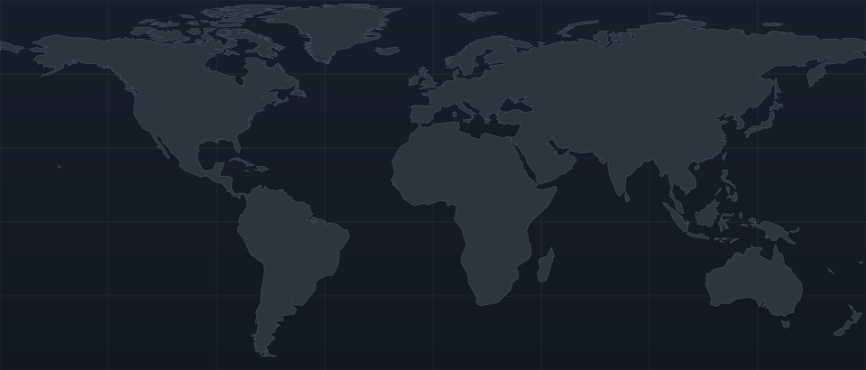

TU RAPIDEZ FRENTE AL MUNDO ANIMAL
Un caracol, un guepardo, un halcón… y tú. ¿Qué tan rápido puedes ir frente a ellos? Mide tu rapidez, descubre a cuáles superarías y escoge tus rivales para La pista.
¿Y la pista? Convierte las rapideces en una carrera simulada: todos parten juntos y puedes observar cuánto avanza cada participante. Ver la pista ↗
Desliza para imaginar qué tan rápido correrías. Descubre el animal terrestre que más se aproxima a esa velocidad, antes de probarte de verdad.
Una referencia cercana a tu velocidad imaginaria.
Si ambos mantuvieran esa rapidez durante 10 segundos.
Distancia hipotética recorrida en 10 segundos a rapidez constante. Todos parten desde 0 m.
Rosa = tú · Lila = animal de referencia. Se muestra una selección cercana a tu rapidez para evitar que los extremos oculten las diferencias.
01 / Tu turno
Elige uno de los tres modos. El GPS estima tu rapidez al desplazarte; movimiento y teclado te permiten experimentar con resultados simulados. Al terminar, podrás compararte con los animales.
GPS sin iniciar
En un lugar abierto y seguro, prepara la señal antes de empezar a correr.
Lecturas válidas: 0 · Aún no se ha registrado desplazamiento.
Para tu carrera real usa el GPS desde un celular al aire libre.
¡Todavía no corres! Prepara el GPS, completa tu carrera y aparecerán los animales que podrías superar.
Importante: el GPS del celular es aproximado, sobre todo en carreras cortas o donde hay edificios. Comienza con una prueba de 100–200 m en un lugar despejado. En iPhone, abre la página directamente en Safari (no dentro de WhatsApp), concede ubicación precisa y comprueba que la señal esté lista antes de empezar. Prepara e inicia la medición antes de correr, detente en un lugar seguro y recién entonces presiona «Terminar carrera». Mantén abierta la página y la pantalla activa. Esta página no guarda coordenadas ni envía tu recorrido a un servidor propio. La comparación es ilustrativa: tu rapidez media se contrasta con velocidades máximas aproximadas de los animales.
Cada emoji representa a un participante. Todos avanzan durante ocho segundos según su velocidad máxima de referencia. Pulsa iniciar y mira quién recorre más metros.
Los metros se calculan a partir de velocidades máximas aproximadas. En animales como el halcón, esa velocidad se alcanza en situaciones particulares, como una picada.
Mapa para explorar · Barras para comparar
Mapa: explora regiones ilustrativas, descubre animales y selecciona rivales. Barras: compara velocidades en una escala común. Puedes elegir hasta seis participantes para la pista; tu resultado se agrega después de una prueba.

En este mapa encontrarás animales con los que puedes comparar tu velocidad. El color indica su hábitat (tierra, aire o agua) y el tamaño de cada círculo representa su rapidez. Selecciona uno para conocerlo y llevarlo a La pista. Si activas el sonido, también podrás oírlo.
¿Qué significan las barras de distancia que aparecen al seleccionar un animal? Comparan los metros hipotéticos que recorrerían tú y ese animal durante los mismos 10 segundos, suponiendo rapideces constantes. No predicen una carrera real.
No queda ningún animal con esos filtros.
| Animal | Medio | Clase | km/h | m/s | m / 10 s* |
|---|
En La pista escuchas la velocidad transformada en un sonido suave; en el mapa puedes oír grabaciones reales de distintas especies.